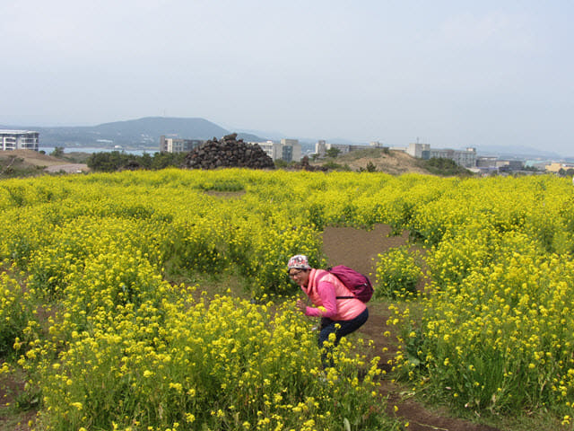
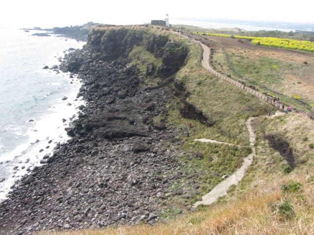

在涉地可支停車場旁的石灘及展望台流連了一會, 接著沿步道一直朝方斗浦燈塔 (방두포등대)的方向往上走, 沿途腳下海濤泊岸, 景緻十分怡人, 經過浪漫教堂改建的糖果屋, 再往前走一會, 來到方斗浦燈塔下的一片遼闊油菜花田, 黃澄澄的, 十分漂亮。

離開油菜花田, 再往前走一會, 立石岩就在前面右邊的岬角下。
很快便來到方斗浦燈塔的山坡下, 沿樓梯便可登上燈塔, 相信是所有旅客必到的地方。她今天狀態甚佳, 搶先一步登上。哈哈~~ 旅客不斷湧上, 把整段樓梯擠得滿滿的, 很難清楚看到她, 只知道粉紅色的一點便是她。
繼續往上走。
喂~~~~~ 終於到達燈塔了!
接著我一口氣跑上燈塔。不過, 太多旅客, 不時要停下來。
喂~~~~ 快 D 上來啦!
回頭向下望望剛才走來的一段路。
繼續向上走。
愈走愈高, 可以看到山下的油菜花田。
左邊最遠處的岬角便是我們下車的地方。我們便是沿崖邊的步道走到來燈塔這裡。
我也到達方斗浦燈塔了!
有一群人正圍著燈塔拍照, 拍完又看, 看完不滿意又拍, 拍完又看, 看完不滿意又拍, 拍完又看, 看完不滿意又拍, ………. 半步又不肯離開, 唉!站在這裡拍照算了!
放眼眺望, 令人心曠神怡。

燈塔下另一邊的景色, 景色十分壯麗, 接著我們便是循東面崖邊的步道離開涉地可支。